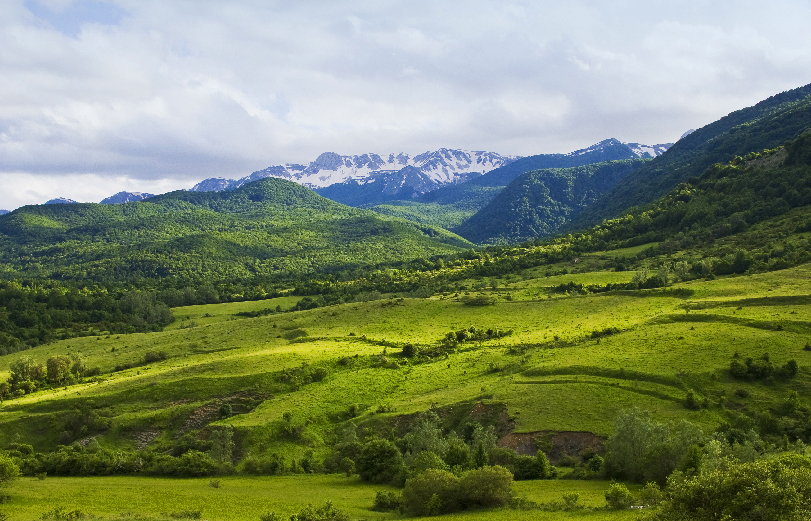
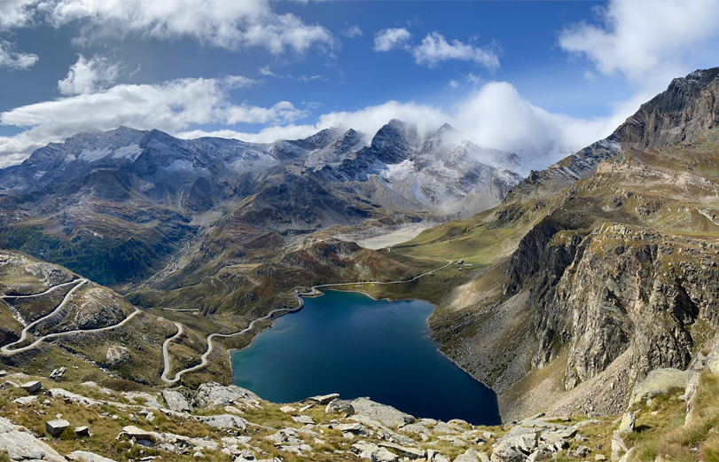
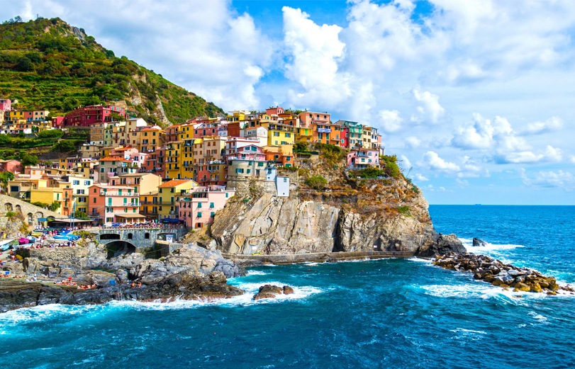
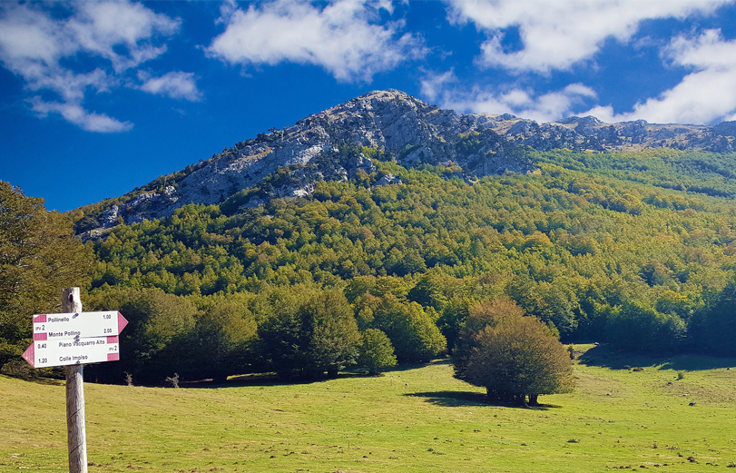
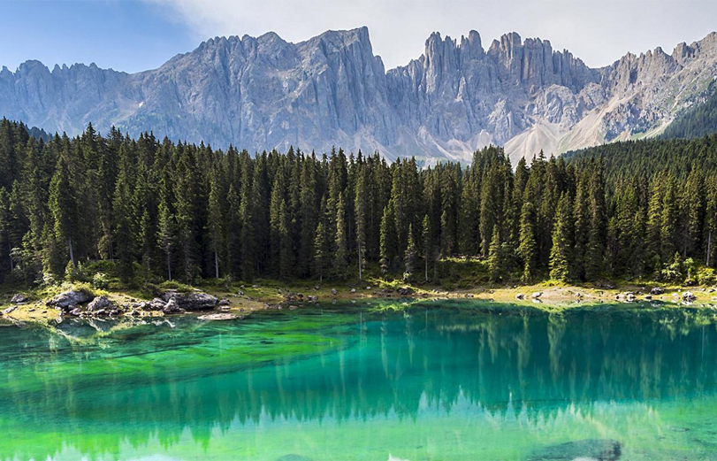
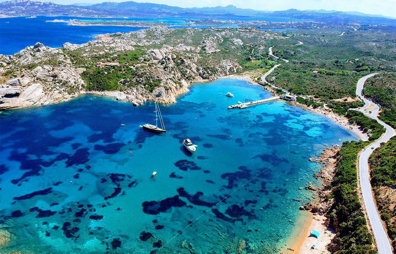
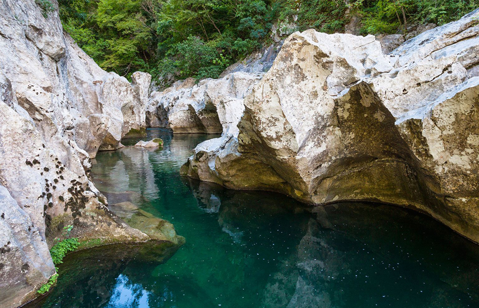
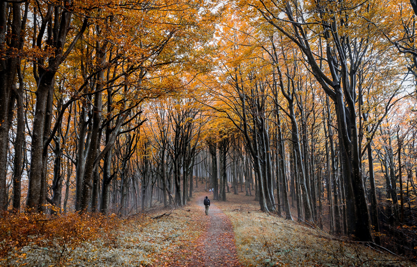

I parchi naturali italiani sono un tesoro di ecosistemi ricchi, paesaggi mozzafiato e unici legami tra uomo e ambiente. Scopri flora, fauna e le storie che rendono speciale ogni angolo protetto del nostro Paese.
Esplorali insieme a noi!

Parco Nazionale d'Abbruzzo, Lazio e Molise
Il Parco Nazionale d'Abruzzo, Lazio e Molise, si estende tra le regioni Abruzzo, Lazio e Molise, nel cuore dell’Appennino centrale. È famoso per la sua ricca biodiversità e per la presenza di specie rare come l’orso marsicano, il lupo appenninico e il camoscio d’Abruzzo.
Regioni: Abbruzzo, Lazio, Molise

Parco Nazionale del Gran Paradiso
Il Parco Nazionale del Gran Paradiso, istituito nel 1922, è il primo parco nazionale d’Italia. Si trova tra il Piemonte e la Valle d’Aosta e prende il nome dal massiccio del Gran Paradiso, che supera i 4.000 metri di altitudine.
Regioni: Piemonte, Valle d'Aosta

Parco Nazionale delle Cinque Terre
Il Parco Nazionale delle Cinque Terre è un parco unico in Italia, che tutela non solo la natura, ma anche il paesaggio modellato dall’uomo, con i caratteristici terrazzamenti coltivati a vite e affacciati sul mare. L’ambiente è ricco di biodiversità e offre panorami mozzafiato.
Regioni: Ligura

Parco Nazionale del Pollino
Il Parco Nazionale del Pollino, si estende tra Basilicata e Calabria, abbracciando il massiccio del Pollino e dell’Orsomarso. È noto per la sua straordinaria biodiversità, i paesaggi selvaggi e la presenza del pino loricato, simbolo del parco.
Regioni: Basilicata, Calabria

Parco Nazionale delle Dolomiti Bellunesi
Il Parco Nazionale delle Dolomiti Bellunesi, si trova in Veneto e fa parte del Patrimonio Mondiale UNESCO Dolomiti. Il parco protegge un ambiente di rara bellezza, fatto di vette maestose, pareti rocciose, vallate selvagge, boschi e praterie alpine.
Regioni: Veneto

Parco Nazionale dell'Arcipelago di La Maddalena
Il Parco Nazionale dell'Arcipelago di La Maddalena. Il parco è noto per le sue acque cristalline, spiagge bianche, scogli granitici modellati dal vento e una ricca biodiversità marina e terrestre. È un'area protetta di grande valore naturalistico e paesaggistico.
Regioni: Sardegna

Parco Nazionale del Cilento, Vallo di Diano e Alburni
Il Parco Nazionale del Cilento, Vallo di Diano e Alburni, si trova in Campania ed è uno dei più estesi e ricchi di biodiversità d’Italia. Dal 1998 è Patrimonio UNESCO insieme ai siti archeologici di Paestum, Velia e alla Certosa di Padula.
Regioni: Campania

Parco Nazionale delle Foreste Casentinesi, Monte Falterona e Campigna
Il Parco Nazionale delle Foreste Casentinesi, Monte Falterona e Campigna, istituito nel 1993, si estende tra Toscana e Emilia-Romagna, nell’Appennino settentrionale.
Regioni: Emilia Romagna, Toscana
VACANZA? Ti aiutiamo noi!
Biglietti e hotel
Ogni giorno scegliamo per te le proposte più convenienti per biglietti e soggiorni, con il miglior rapporto qualità-prezzo.
Il mondo dei parchi
Eventi, comunicati, recensioni e racconti: resta aggiornato su tutte le novità dal mondo dei parchi, ville e castelli.
Massima sicurezza
Acquista e prenota in tutta sicurezza: ti colleghiamo solo con biglietterie ufficiali e partner certificati.